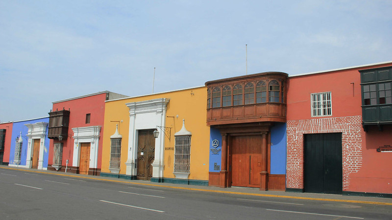

Sarah joined a Youthlinc expedition to Kenya as a high school senior. Tasked with working alongside the local health committee, her hands-on experience in village health seminars sparked a lifelong passion for global medicine.
Today, Sarah is completing her residency as a pediatrician. "Youthlinc completely flipped my worldview," Sarah shares. "It taught me that real medicine isn't just about clinical treatments—it's about building trust, community partnership, and structural support."
Building More Than Classroom Walls

In 2024, Youthlinc teams laid foundations for a multi-room educational center in rural Peru. Two years later, our local NGO partners report that school attendance rates within the community have surged by over &45;%.
By sourcing construction elements locally and building in direct coordination with village leaders, the facility has successfully expanded to offer evening adult literacy classes and vocational training workshops.
Real Life, Real Growth
Our Real Life peer mentoring program continues to create deep bonds right here at home. This past school year, over 150 local high school and university students stepped up to mentor refugee youth in Salt Lake City.
Through weekly curriculum blocks focused on financial literacy, digital safety, and language support, over &90;% of senior participants in the tutoring cohorts successfully graduated on time and transitioned into higher education.